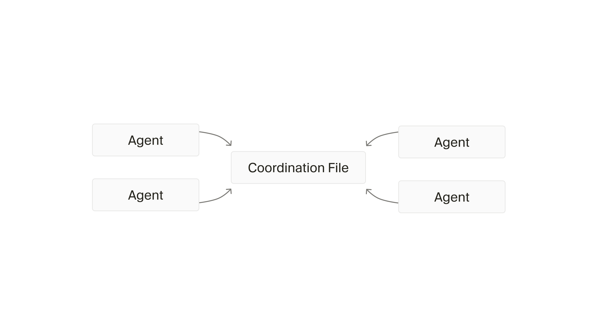
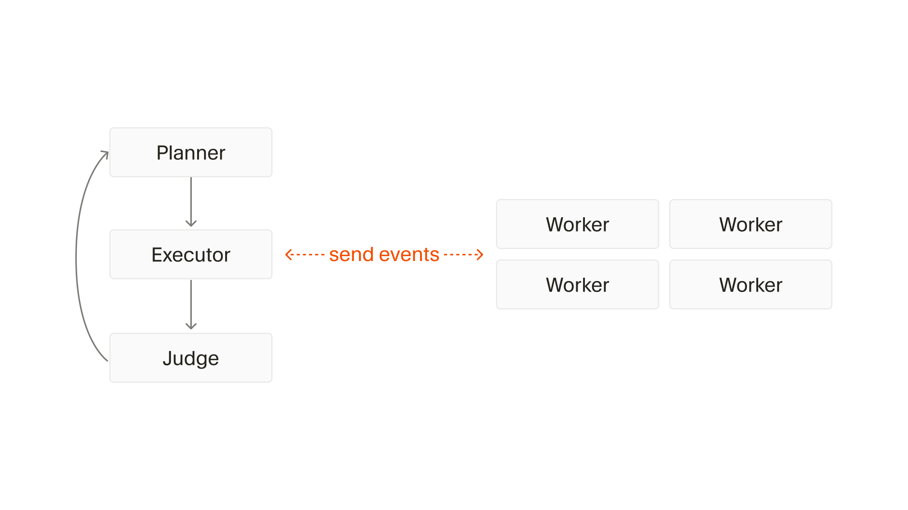
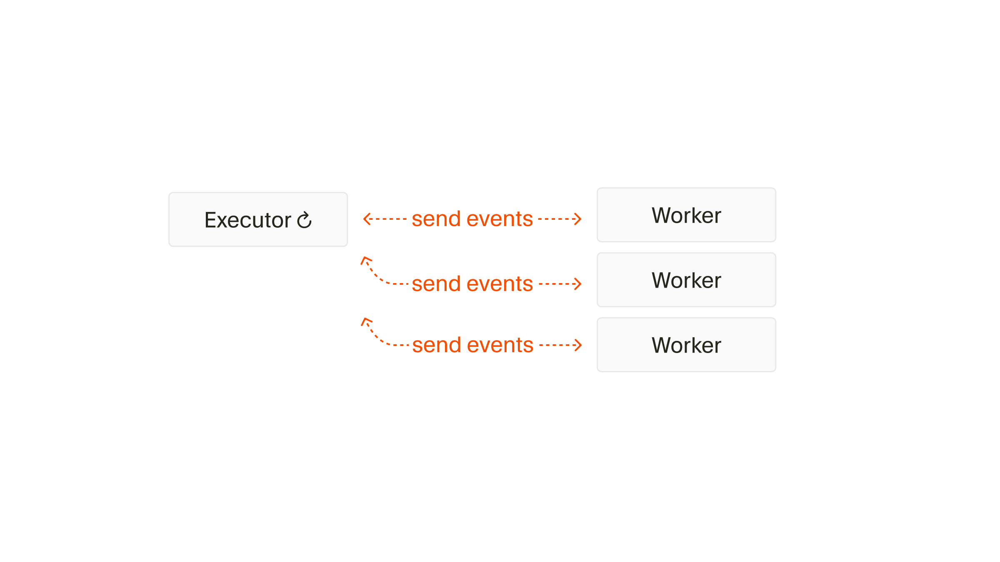
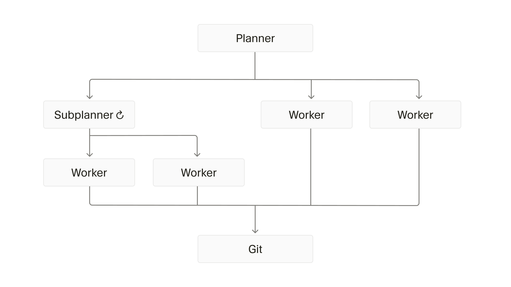

Cursor内部有一项持续的研究：把模型推到极限，让可以连续运行很多天的agent自主完成大型工程。最近他们把成果以预览形式开放给部分用户尝试：这套系统已经能编排数以千计的agent连续运行一周，自主完成了一个Web浏览器绝大部分的代码提交，全程几乎不需要人工干预。
这篇文章由Cursor的Wilson Lin撰写，完整回顾了harness的演进过程：从让单个agent去写完整浏览器引擎，到共享状态文件的平行agent，再到角色分工、持续执行器，最终收敛成递归拆解的根规划器加互不通信的worker的结构，并沉淀下大量关于指令设计、吞吐权衡与系统可观测性的经验。
这个项目最初只是个人的业余研究。之所以选择浏览器当评测基准，是因为它的复杂度足以暴露前沿模型的局限，而且包含大量需要相互协同的子系统。最初的设想很简单：让模型先写出一个构建浏览器引擎的详细规划，然后不断提示它继续，看看究竟能推进到什么程度。
这条路很快走不通。模型会搞不清自己做到哪一步，经常离成功还很远就停下来宣称完成，还会卡在复杂的实现细节上。但它又确实展现出深厚的知识：能在小范围内写出不错的代码。真正的障碍是任务本身太大，必须拆成子任务。
于是改为让agent规划出由主要工作项组成的依赖图，多个agent并行承担，人手动启动、在它们停下时再推一把。吞吐量上来了，结果却没有明显变好：agent之间无法交流，也没有谁能为整个项目提供全局反馈，系统需要变得更动态。
后来GPT-5.1和GPT-5.2在精确遵循指令上表现出色，似乎很适合长时间运行的agent，调度框架也随之切换过去。到这个阶段，框架已经能搭出不带JavaScript的简易浏览器，但让单个agent去写完整的浏览器引擎，慢到难以接受：这引出了下一轮研究：多花10倍的算力，能不能换来10倍更有意义的吞吐？
研究从一套简单的Rust测试框架开始，跑在一台资源充足的大型Linux虚拟机上，通过SSH和一个简单终端来控制：刻意先不碰分布式系统的复杂性。前期投入了大量精力做可观测性：所有agent消息、系统操作和命令输出都被记录并打上时间戳，可以随时分析和回放会话，既便于人工审查，也能把数据回传给Cursor做模式挖掘。
第一个多智能体方案非常简单：让同一层级的agent共用一个状态文件，各自查看别人在做什么、决定自己要做什么、再把更新写回去，尽量少规定规则，让它们自己摸索协作。
结果很快失败。共享文件制造的问题比解决的还多：agent会把锁持有太久、忘记释放、在不合法的时候尝试加锁或解锁，整体上根本不理解锁的意义；锁还造成严重争用：20个agent的吞吐量会掉到1到3个的水平，大部分时间都在等锁。给他们一个显式等待其他agent的工具几乎没人用，换成无锁乐观并发也只是降低了开销，没有消除混乱。

更本质的问题是缺乏结构化分工：没有任何单个agent会接手大型复杂的任务，它们倾向于回避争用和冲突、选择更小更安全的修改，而不是对整个项目负起责任。
下一步是给角色分工。规划器先制定明确的方案和交付物，推动用户指令不断前进；随后交给执行者：它是唯一的主导代理，全权负责把计划落实，可以向工作者派发任务，实现线性扩展；执行完成后，再由独立的裁决者介入，判断是否已经完成、要不要再迭代一轮。把执行与统筹责任集中在单一角色上，工作者就能专注自己的任务，系统也能稳定交付。

这套设计离不开对系统的细致观察。如果存在一个主要问题，它往往会在许多agent和工具调用里反复出现：比如很多agent同时跑git restore造成的资源争用。Cursor用他们自己的工具分析日志、与提示词对照，理解实际行为为什么和预期不符。最终发现系统的瓶颈其实卡在最慢的worker上，整体过于僵化：一开始就把规划做满，遇到新问题就很难动态调整，一些agent会朝着适得其反的方向越走越远，直到下一轮迭代才被纠正。
下一版移除了独立的规划器。执行者在派发任务之外自己规划如何实现目标：因为它是唯一的agent，不需要把计划写下来，也不必拘泥于一份静态计划，更不用死板地等所有worker都完成。
为了让长时间运行的agent不逐渐偏离预期，团队引入了新鲜度机制：频繁从头重写scratchpad.md而不是一直追加；接近上下文上限时自动总结；在system prompt里加入自我反思和目标对齐提醒；并鼓励agent随时调整方向、质疑既有假设。系统由此变得高度动态：能主动探索代码、重新审视决策、管理worker、交错执行任务，并持续纳入最新信息。由于模型在按指令完成任务上已经相当可靠，judge也被移除以保持系统简单。

不过持续的改进挡不住异常行为的出现：执行器会随机休眠、停止运行agent、自己亲自下场干活、拒绝规划、只生成少量极其狭窄的任务、无法正确合并worker的更改，还会过早宣称工作完成。回头看，原因很清楚：它同时被赋予了太多角色和目标：规划、探索、研究、派生任务、检查worker、审查代码、执行编辑、合并输出、判断循环是否完成。它被压垮了。
最终设计融合了所有经验，也意外地贴近真实软件团队的运作方式：一个根规划器负责用户指令的整体范围，理解当前状态并给出具体、明确的任务，但它自己不写任何代码，也不知道任务是否被领取、由谁执行。
当某个规划器认为自己的范围还可以拆分，它会生成子规划器，子规划器完全接手被委派的那一小块范围，并以类似方式对这块范围全权负责：这个过程是递归的。真正干活的worker只负责领取任务并一路推进到完成，它们不知道更大系统的存在，也不与任何其他规划器或worker通信，在自己拷贝的仓库上工作，完成后写一份交接说明，由系统交给发起请求的规划器。

子规划器通过快速并行拉起worker来提升吞吐，同时保证系统始终有一个agent对每个环节全权拥有；这一机制也避免了单个规划器在大项目上不堪重负、视野变窄。交接说明不只是已完成事项，还包括重要备注、关注点、偏差、发现、想法和反馈，规划器会把这些作为后续消息接收：所以即使某个规划器已经完成，它仍会不断收到更新、拉取最新代码并继续做决策。信息沿链路向上传播给视角越来越全局的所有者，整个系统不需要全局同步，也不需要agent之间额外的沟通开销。
最初还设了一个integrator做集中式、全局感知的质量控制，减少大量worker同时push、rebase、解冲突带来的竞争。它很快就成为明显瓶颈：数百个worker却只有一道必须排队通过的质量关卡。反复调prompt之后，团队认定它并非必要，最终直接移除以简化系统。
这套系统在一周内完成了约1000万次工具调用，峰值吞吐约为每小时1000次commit，而且一旦启动就不需要任何人工干预。为了这个吞吐量，团队在两方面做了有意的取舍。
一是提交正确性。如果要求每一次提交前都达到100% 正确，执行会严重串行化、有效吞吐大幅下降：哪怕只是一个API变更或拼写错误，都能让整个系统几乎停摆：worker越出自己的职责去修不相干的内容，许多agent一拥而上、彼此踩踏地抢修同一个问题。反过来，允许一定的误差空间，agent就能相信别的问题很快会被其他agent修掉：在实践中确实如此，因为系统对整个代码库有有效的所有权和委派机制：错误会出现，但很快被修复，错误率维持在小而稳定的水平，不会失控飙升。这也许说明，理想的高效系统应当接受一定错误率，但仍保留一个最终的绿色分支，由某个agent定期快照、在发布前做一次快速清理。
二是同步开销。多个agent同时改同一个文件、对同一段代码做重构的情况时有发生。与其试图彻底杜绝或过度设计，团队选择接受这些偶发的乱流时刻，让系统在短时间内自然收敛恢复。这会多消耗一些token、在局部造成竞争，但换来的是更简单的系统：更容易对齐模型、更容易管理和观测、阻力更小、全局生产效率更高。
基础设施方面，每次多agent运行都在一台资源充足的大机器上独立执行，大多数运行峰值只有几百个agent，会吃满但不过载。当限制了agent的内存后，磁盘成了新瓶颈：单体项目中数百个agent同时编译，构建产物会产生数GB每秒级别的读写。一个反直觉的教训是，项目结构、架构决策甚至开发者体验都会影响token和commit的吞吐：因为大量时间花在和代码库交互（比如编译）上，而不是理想的思考与编码。
很多工具是为单用户设计的，几百个agent同时用时，单用户场景里无伤大雅的低效会被放大。最简单的解法是给每个agent一台机器，但更有意思的是重新思考基础原语：Git、Cargo这类工具用共享锁做并发控制，能否把数据库等并发系统里成熟的机制引进来？所有agent都有仓库副本，但多数文件和构建产物都一样，能否用写时复制和去重，让单用户工具在多agent场景下同样顺滑？
指令的质量同样关键，而且会被放大：本质上你是在和一个典型编码agent交互，只是给了它高出好几个数量级的时间和算力，任何次优或含糊的指令都会加倍显现：agent会严格沿着给定路径执行，即便路径本身很糟糕。实践里团队多次发现，输出质量不佳往往源于规格设计得不好或不充分，而harness只是精确执行了指令。
浏览器项目给出了几个具体例子：一开始的指令过度聚焦于实现规范和修bug，像spec implementation这样含糊的指令会让agent去深挖晦涩少用的特性，而不是做优先级排序；性能不会自动落在可接受范围，需要显式指令和强制超时配置来逼它平衡；系统复杂部分容易写出内存泄漏或死锁代码，必须提供显式的进程级资源管理工具让它优雅恢复。有一次运行还暴露了依赖约束的缺失：agent引入了本可自己实现的依赖。另一次运行里，系统在仓库严重损坏的状态下做了一次大规模重构，把单体拆成许多自包含的crate，几天内就收敛到可工作的代码，吞吐还提升了好几倍。
提示词的经验可以浓缩成几条：只针对模型不知道的事下指令（多智能体协作方式、如何跑测试、你的部署流水线），把模型当成一个极其聪明但刚入职的工程师；约束通常比指令更有效，No TODOs, no partial implementations远比remember to finish implementations好用；避免打勾清单式的心态，事无巨细的清单会让模型忽略更广的范围、同时降低未列出事项的优先级；最后，讨论任务规模时给出具体数量很有用：generate many tasks往往只换来保守的少量任务，而Generate 20-100 tasks会让模型表现出明显更广泛、更有野心的行为。
这套研究沉淀下三条原则：系统要有反脆弱性：同时运行的agent越多失败概率越高，系统必须能承受单个agent的失败并让其他人接手补救；以实证为先而非假设驱动：根据数据和观察调整，而不是预设系统应该如何工作；明确为吞吐量设计：接受小而稳定的错误率、用最终核对环节修正，而不是追求每次提交都100% 完美，那会显著拖慢整体。
当系统被正确设计出来，它可以既优雅又简洁，在极低的额外开销下运行，并实用地线性扩展token吞吐量。团队也指出，在探索过许多方案之前，并不清楚哪种简单方法是真正可行的：这正是这类系统设计里最难也最值得投入的部分。
品味、判断和方向仍然来自人类，但AI在快速迭代与推进研究上成了重要的力量倍增器。这是一种良性的循环：用AI开发AI，随着模型、agent与测试框架不断变好而自我强化。值得玩味的是，这套agent的分工方式呼应了当今一些软件团队的实际运作，而模型并没有被显式训练成这样：这说明它可能是一种涌现行为，甚至就是组织软件项目的正确方式。
参考：https://cursor.com/cn/blog/self-driving-codebases